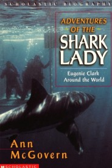
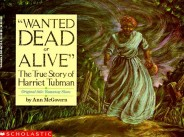

Biographies
SHARK LADY: TRUE ADVENTURES OF EUGENIE CLARK
Eugenie Clark, a famous scientist, teacher, writer and scuba diver, has explored the underwater world of many seas and goes out of her way to find sharks. Her many adventures include diving into caves of sleeping sharks, descending in a tiny submarine and discovering mysterious deep sea fish.

ADVENTURES OF THE SHARK LADY: EUGENIE CLARK AROUND THE WORLD
Exciting adventures of Eugenie Clark continue as she dives with dangerous Great White sharks, gripped by a giant crab; danger 2,000 feet down in the sea in a tiny submersible — and so much more.
THE SECRET SOLDIER: THE STORY OF DEBORAH SAMPSON
During the American Revolutionary War, when Deborah Sampson was 18 years old, most girls her age were getting married. But Deborah wanted to have adventures — and so she joined the Continental Army dressed as a man.

WANTED DEAD OR ALIVE: THE TRUE STORY OF HARRIET TUBMAN
Born a slave on a Maryland plantation, Harriet Tubman dreamed of following the North Star to freedom. When she did escape, she risked her life many times to lead over 300 slaves to freedom on the Underground Railroad.
CHRISTOPHER COLUMBUS
Written in McGovern’s exuberant style, here is a recounting of Columbus’ early sea voyages, his disappointments and successes. Historically accurate, this book reads like a suspenseful story.
IF YOU GREW UP WITH ABRAHAM LINCOLN
What happened if you got sick? What was your “blab” school like and what would you do to earn 25 cents a day? You’ll feel like you really lived in Lincoln’s time when you read this book.